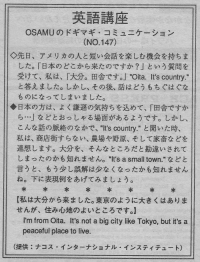

住み心地のよいところです。
先日、アメリカの人と短い会話を楽しむ機会を持ちました。「日本のどこから来たのですか？」という質問を受けて、私は、「大分。田舎です。」 ／Oita. It's country.／と答えました。しかし、その後、話はどうもちぐはぐなものになってしまいました。
日本の方は、よく謙遜の気持ちを込めて、「田舎ですから…」などとおっしゃる場面があるようです。しかし、こんな話の脈絡のなかで、 It's country. と聞いた時、私は、商店街すらない、農場や野原、そして家畜などを連想します。大分を、そんなところだと勘違いされてしまったのかも知れません。It's a small town. などと言うと、もう少し誤解は少なくなったかも知れませんね。下に表現例をあげてみてみましょう。
私は大分から来ました。
東京のように大きくはありませんが、住み心地のよいところです。
I'm, from Oita.
It's not a big city like Tokyo, but it's a peaceful place to live.

| © 1995-2013 NACOS International Institute. All Rights Reserved. |